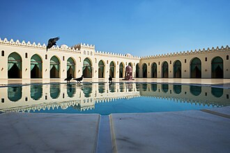

概要
La mosquée Al-Hakim, surnommée al-Anwar, est une mosquée historique du vieux Caire, en Égypte. Elle porte le nom d'Al-Hakim bi-Amr Allah (985-1021), le sixième calife fatimide et 16e imam ismaili.
جامع الحاكم بأمر الله مسجد بني عام 380 هـ في عهد العزيز بالله الفاطمي الذي بدأ في سنة 379هـ (989م) في بناء مسجد آخر خارج باب الفتوح ولكنه توفي قبل إتمامه فأتمّه ابنه الحاكم بأمر الله 403هـ (1012-1013م) لذا نسب إليه وصار يعرف بجامع الحاكم.
The al-Hakim Mosque, also known as al-Anwar, is a mosque in Cairo, Egypt. It is named after al-Ḥākim bi-Amr Allāh (985–1021), the 6th Fatimid caliph and 16th Ismāʿīlī Imam. Construction of the mosque was originally started by Caliph al-ʿAziz, the son of al-Muʿizz and the father of al-Ḥākim, in 990 CE. It was completed in 1013 by al-Ḥākim, which is why it is named after him.
Masjid al-Hakim, nama panggilannya al-Anwar adalah salah satu situs agama Islam utama di Kairo, Mesir. Diambil dari nama Al-Hakim bi-Amr Allah (985-1021), khalifah Fatimiyah ke-6 dan imam Ismaili ke-16. Masjid ini awalnya mulai dibangun oleh al-Aziz, putra Mu'izz pada 990 M. Dinamai dari nama al-Hakim karena dia yang menyelesaikannya.
الحاکم مسجد (عربی: الجامع الانور مصر کے دار الحکومت قاہرہ میں واقع ایک مسجد ہے جو فاطمی دور حکومت کی سب سے بڑی مسجد ہے۔ اس مسجد کی تعمیر کا آغاز 990ء میں فاطمی خلیفہ عزیز باللہ کے دور حکومت میں ہوا اور ان کے بیٹے خلیفہ الحاکم بامر اللہ کے دور حکومت میں 1013ء میں اس کا کام تکمیل کو پہنچا۔
Die al-Hakim-Moschee ist eine große Moschee in der ägyptischen Stadt Kairo. Sie ist nach al-Hakim benannt, dem 6. Fatimiden-Kalifen und 16. Ismailiten-Imam der Fatimiden. Es war eine weitere Moschee in Kairo neben der bereits bestehenden al-Azhar-Moschee, dem religiösen Zentrum der Schule der Ismailiten. Hakim war der erste Fatimiden-Herrscher, der in Ägypten geboren wurde.
La Mezquita Al-Hákim, también conocida como Al-Jam‘e al-Anwar es una importante mezquita situada en El Cairo, Egipto. Se llama así en honor al imán Al-Hákim bi-Amr Allah (985-1021), el sexto califa fatimí, decimosexto imán fatimí/ismailí y el primero nacido en Egipto.
Al-Jam`e al-Anwar, conhecida também como Mesquita de Aláqueme, é uma grande mesquita no Cairo, Egito. Ela foi batizada em homenagem ao imam Aláqueme Bianre Alá (985–1021), o sexto califa fatímida e o décimo-sexto imam para os xiitas ismailitas, o primeiro nascido no Egito.
De Al-Hakimmoskee is een grote moskee in de Egyptische stad Caïro. De moskee werd in 990 begonnen door Fatimische kalief Al Aziz Billah en in 1013 afgerond door diens zoon al-Hakim bi-Amr Allah en zijn toezichthouder Abu Muhammad al-Hafiz 'Abd al-Ghani ibn Sa'id al-Misri.
Мече́ть аль-Хаки́ма — мечеть в Каире. Расположена недалеко от ворот Баб аль-Футух. Вторая по величине мечеть эпохи Фатимидов. В разное время мечеть использовалась как тюрьма, конюшня, завод, музей, школа и футбольное поле.
มัสยิดอัลฮากิม มีอีกชื่อว่า อัลอันวัร เป็นมัสยิดเชิงประวัติศาสตร์ในไคโร ประเทศอียิปต์ ตั้งชื่อตามอัลฮากิม บิอัมริลลาฮ์ เคาะลีฟะฮ์องค์ที่ 6 แห่งรัฐเคาะลีฟะฮ์ฟาฏิมียะฮ์และอิมามอิสมาอีลียะฮ์คนที่ 16 การก่อสร้างมัสยิดในตอนแรกเริ่มต้นโดยเคาะลีฟะฮ์อัลอะซีซ พระราชโอรสในอัลมุอิซซ์และพระราชบิดาในอัลฮากิมเมื่อ ค.ศ. 990 และแล้วเสร็จโดยอัลฮากิมใน ค.ศ. 1013 จึงเป็นที่มาของชื่อมัสยิด
Al Hakim-moskén ligger i stadsdelen Historiska Kairo i centrala Kairo, Egypten. Den färdigställdes 1013 under kalifen Al-Hākim bi-amri ʾllāhs regeringstid och är till ytan, efter Ibn Tulun-moskén, den näst största moskéen i staden och bland de största i världen.
地図上の位置
資料とリンク
- Wikipédia — Français
- Wikipédia — العربية
- Wikipédia — English
- Wikipédia — Bahasa Indonesia
- Wikipédia — اردو
- Wikipédia — Deutsch
- Wikipédia — Español
- Wikipédia — Português
- Wikipédia — Nederlands
- Wikipédia — Русский
- Wikipédia — ไทย
- Wikipédia — Svenska
- Wikidata — Q775838
データ：ウィキデータ（CC0）、3か月ごとに更新。年は、その建物について知られている最も古い建設年です。のちにモスクになった建物（アヤソフィアなど）の場合は、元の建物の建設年です。写真：ウィキメディア・コモンズ。作者とライセンスは各写真のページにあります。